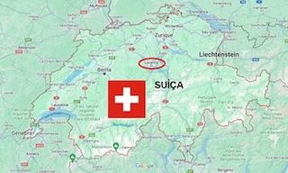

Localização
Lucerna (em alemão, Luzern) é uma das cidades mais encantadoras da Suíça, localizada no coração do país às margens do Lago dos Quatro Cantões (Vierwaldstättersee) e cercada pelos Alpes. Ela combina um cenário natural impressionante com um centro histórico muito bem preservado e uma atmosfera acolhedora
Diw